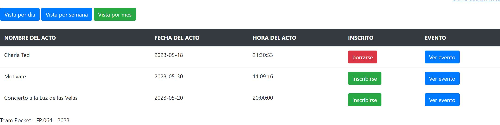

Cuando se accede a la aplciación, nos envia directamente a la pagina del login. Aquí, si tenemos un usuario creado iniciaremos sesión y si no, nos registraremos.:
Introducimos en este caso todos los datos necesarios para Registrar un nuevo USUARIO:
En este caso el USUARIO ya esta creado y por lo tanto nos mostrará este mensaje:

En caso de que el USUARIO no estuviera creado el mensaje seria el siguiente:
Iniciamos la sesión con nuestro USUARIO:

Una vez introducidos los datos correctos en el LOGIN, entraremos con nuestro USUARIO a la vista de USUARIO en este caso:
Podemos ver que en la anterior imagen esta seleccionada la opción de "Vista por dia", en este caso seleccionaremos la opción "Vista por semana":
Seleccionamos en esta imagen la opción de "Vista por mes":
Nos quedamos pues, con la "Vista por Mes", donde hay mas cantidad de eventos.
En este caso podemos ver que no estamos inscritos en ningún evento. En caso de que nos interese alguno podemos acceder a los detalles del mismo para informarnos haciendo click en "Ver evento":
Bien, para continuar, volvemos a la Vista por mes, una vez decidido que nos queremos inscribir en el evento de la "Carla TED" haremos click en el boton "inscribirse":
Una vez hagamos click veremos el siguiente mensaje:
Una vez apuntado al evento veremos que el boton cambia de color:
Ahora imaginemos que lo has pensado dos veces, y has decidio que no quieres asistir a este evento
Y que has decidido asistir al resto de eventos que se ofrecen.
Deberas hacer click en el boton rojo "borrarse" y a su vez hacer click en los dos votones verdes "inscribirse".
Como se ve en la imagen a continuación: